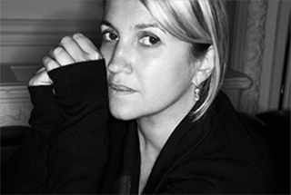
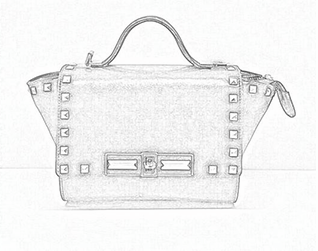
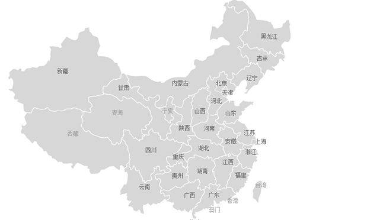

1980年，little bag首席设计师KARL LAGERFELD
以创新的风格和远见为品牌的系列注入新的生命力。
KARL LAGERFELD 推出了 BAGUETTE 包，营造出一款备受追捧的手袋，
为 IT 包现象奠定了前提。BAGUETTE 包，具有无数的色彩、装饰，以及面料变化。
也因此每一个 BAGUETTE 包都具有不同的个人特色，
与当时流行的黑色极简主义尼龙系列形成了鲜明的对比。


BAGUETTE 包正代表了 little bag 品牌的核心理念：双重性。
别致精简且永恒的外观，通过手工技艺来揭示其高贵的灵魂；
其含蓄和意想不到的内饰亦展现手袋的惊喜之处：
外观与内饰形成对比的色调和不同的纹理，并选用优质牛皮或稀珍皮革
尽显低调优雅。时尚不需要大声奢华，引领奢华时尚的新概念。
little bag于中国开设超过424间专门店，全部由总公司直接管理。
1987年品牌与Moet Hennessy组成大规模的箱包集团
同一时期，品牌的产品领域亦不断扩充，首推1985年面世、
色泽鲜艳的Epi皮具系列，其后1993年推出Taiga皮具系列以及在1996年
再次重新推出Damier帆布系列,
特别委托七位著名时装设计师创作限量Monogram手袋，
当中最别致的设计为Azzedine Alaia创作的美洲豹皮配Monogram，
以及Vivienne Westwood设计的Monogram手袋。
